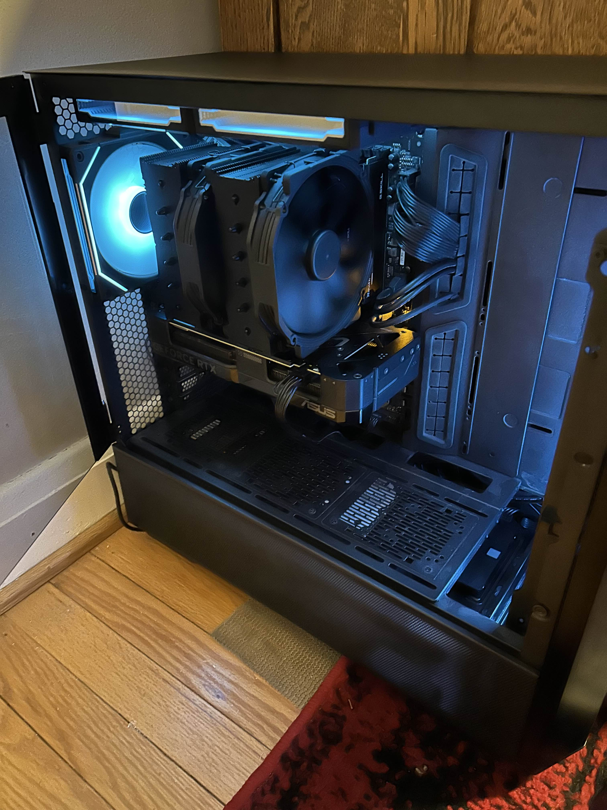

JPG
This is an image of the first ever computer I put together!
The JPG format is a popular image format mostly used for photographs!
I chose this image because it's very important to me as it's the very first computer I built. If it weren't for this, I wouldn't be persuing this career today!
Source: By me